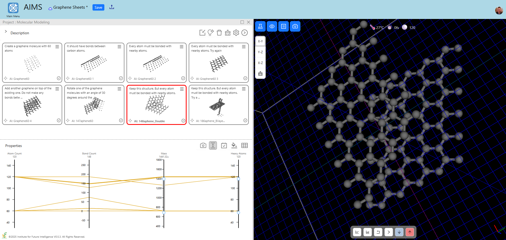
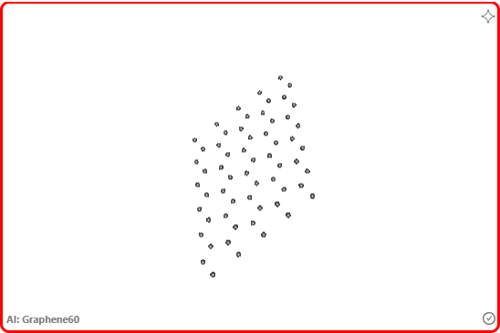
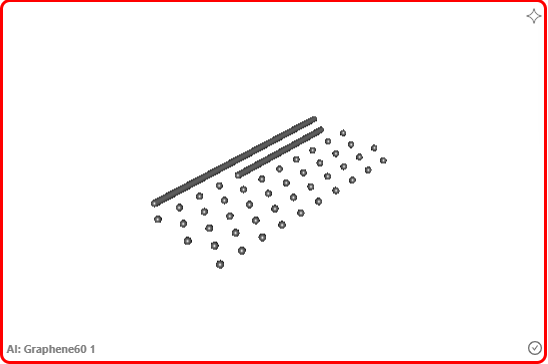
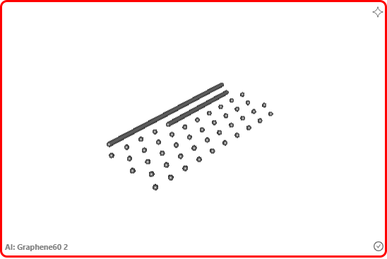
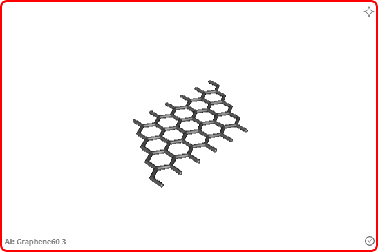
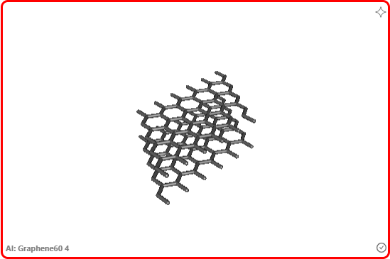
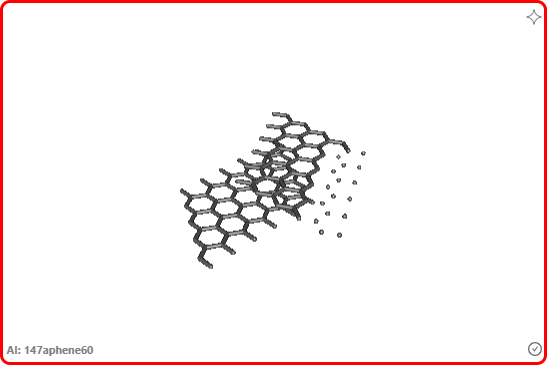
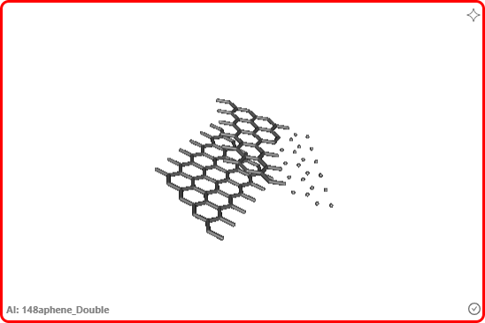
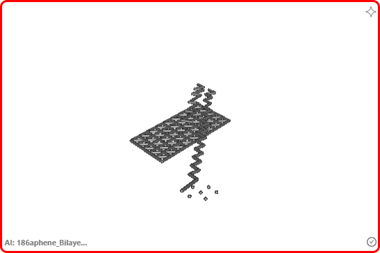

Using GenAI as an Assistant for Molecular Design
A walkthrough of how AIMS pairs generative AI with chemistry-aware correctors to help design molecular structures — illustrated with a graphene bilayer case study.
In this article, we show how generative AI (GenAI) is used in AIMS as an assistant for designing molecular structures. According to a recent article in Nature, GenAI provides a new paradigm of materials design compared with screening thousands of candidate structures. If you are interested in exploring for yourself how this paradigm shift may affect future scientists, AIMS may be a good starting point as it supports both the screening approach and the generative approach. The GenAI model used in this article is based on OpenAI's o4-mini.
Keeping track of AI outputs with the Project Gallery in AIMS
The Project Gallery in AIMS is a visual organizer that collects, visualizes, and sorts molecules using visual analytics. Users can import molecules from a built-in database that curates hundreds of molecules with documented chemical and physical properties. While the internal database provides only a limited number of molecules, users can also add molecules generated by AI to the Gallery. Hence, what users can add to the Gallery is unlimited.
The Gallery stores the prompts sent to GenAI and the returned results as shown in the screenshot below. The results are displayed as interactive 3D molecules whereas the prompts used to generate them can be shown on top of the molecules or found on a popup window that opens when users click the name of a molecule (the latter is the default as most users may prefer to see a clean view of the molecules). By default, the "AI memory" is enabled in Gallery Settings, allowing users to generate a new molecule based on using all the previous prompts and results as the context. Users can also remove the "bad memory" (i.e., the molecules that deviate too much from users' expectations) from the Gallery and retain the good results for next steps.

Designing a bilayer of graphene
We use the design of a graphene bilayer as an example in this article. This kind of metamaterial has shown surprising properties such as superconductivity. So we would like to see if AI can generate this structure. Below is a list of prompts that we used in this experiment and the corresponding results:
- Prompt:
Create a graphene molecule with 60 atoms.
Result:
- Prompt:
It should have bonds between carbon atoms.
Result:
- Prompt:
Every atom must be bonded with nearby atoms.
Result:
- Prompt:
Every atom must be bonded with nearby atoms. Try again.
Result:
- Prompt:
Add another graphene on top of the existing one. Do not make any bonds between the new graphene and the existing one.
Result:
- Prompt:
Rotate one of the graphene molecules with an angle of 30 degrees around the direction perpendicular to the graphene's plane.
Result:
- Prompt:
Keep this structure. But every atom must be bonded with nearby atoms.
Result:
- Prompt:
Keep this structure. But every atom must be bonded with nearby atoms. Try again.
Result:
AI returned an absurd result at the end when pushed to create the missing bonds. Perhaps the silver lining is that this ridiculous result is not even a hallucination as it is so obviously wrong — probably even to a student who is learning chemistry. To fix this problem, AIMS provides a solution described below.
Correctors
Because GenAI is satistical in nature, there is no guarantee that it will return the correct results for complex problems no matter what prompts we choose and how many times we try it. It may be valuable to augment GenAI with specific knowledge from science. We call this kind of tool correctors. In AIMS, there are two types of correctors: implicit and explicit. An implicit collector is one that is applied to remedy AI's results without users' invocation. One implicit collector is the SDF formatter that ensures AI's results conform to the SDF molecular format used in AIMS. An explicit collector is one that needs to be invoked by users. One explicit collector is the Auto-Bond Corrector that can be used to automatically build bonds. The explicit correctors can be found on the menu of a molecule in the Gallery. You can use the Auto-Bond Collector to add the missing bonds in the graphen bilayer when AI seems unable to generate the correct structure.
More collectors will be added to AIMS as we continue our development.
Exploring by yourself
The following embedded window shows this AIMS project in the live mode that you can explore on your own.
Conclusion
As you can see, GenAI achieved some degree of success but did not always produce scientifically accurate results in this task. Despite this, it is still quite impressive. Given the current pace of development, its reasoning ability may improve over time in the near future, eventually making it a viable and valuable tool for serious science.
← Back to AIMS